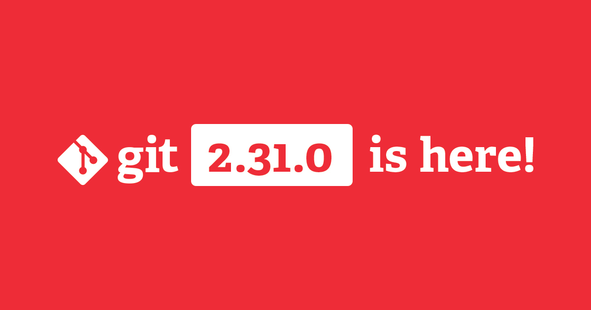

开源项目 Git 不久前发布了 2.31 版本，由 85 位贡献者带来了新功能和 Bug 修复，其中 23 位是新加入者。上次我们和大家同步版本更新情况还是 Git 2.29 刚刚发布的时候。自 2.29 版本起，Git 又历经了两个版本的迭代，那就让我们来看看那些最有趣的功能和变化。
Git 维护想象一下：你打开了终端，正在进行提交、从其他仓库拉取、把最终成果推到远端等一系列操作，但猛然间，你一头撞见这条来者不善的信息：
Auto packing the repository for optimum performance. You may also
run "git gc" manually. See "git help gc" for more information.
然后，你就被卡在这里了。现在，你只能乖乖等着 Git 运行完 git gc --auto，然后才能继续操作。
这是怎么回事？在通常的使用场景中，Git 会写入大量数据：对象、包文件、引用等等。对于其中的部分数据路径，Git 会优化写入性能。例如，写入一个“松散”对象确实比较快，但读取一个包文件会更快一筹。
为了让你保持高效率，Git 进行了协调：通常，它会在你的操作过程中优化写入路径，也就是会时常暂停下来，让它的内部数据结构读取起来更高效，目的是使你保持长期的高效产出。
Git 自有其算法来决定何时适合执行这种“暂停”，但有时那些算法可能会不合时宜地触发导致阻塞的 git gc 操作。虽说你可以自己管理这些数据结构，但你可能并不想浪费时间来定夺何时处理、如何处理。
从 Git 2.31 开始，后台维护能让你兼得鱼和熊掌。这一跨平台特性让仓库维持良好运转，同时不会阻塞任何交互。值得一提的是，Git 会每小时一次地从远端预拉取（Pre-fetch）最新对象，这将有效缩短执行 git fetch 的耗时。
上手后台维护功能再容易不过了。只需在终端中切换到想使用后台维护功能的仓库，然后运行下列命令：
$ git maintenance start
Git 会完成剩余的工作。除了每小时预拉取一次最新对象，Git 还会确保它自己的数据也是井然有序的。它会每小时更新一次 commit-graph 文件，并每晚把松散对象打包（并且把已经打包的对象重新打包）。
在 Git 维护文档中，你可以读到关于此功能的更多信息，并可获悉如何用 maintenance.* config 选项自定义该功能。如果遇到了困难，你可以查阅排错文档。
或许你已经知道，Git 把所有数据都以“对象”的形式存储：提交、树、存储着每个文件的内容的 Blob 文件。出于效率考量，Git 把许多对象置于包文件中，而包文件本质上是连成一串的对象流（git fetch 和 git push 传输对象靠的也是这个流）。为了能够高效地访问这一个个对象，Git 给每个包文件生成一个索引。这些 .idx 文件让对象 ID 能够快速转换为包文件中对应的字节偏移量。
那如果我们想反向访问怎么办？再者说，如果 Git 只知道要在包文件里找的是哪个字节，那它是如何得知那个字节属于哪个对象呢？
为了做到这一点，Git 使用了恰如其名的反向索引：一种不透明映射，关联了包文件中的位置和每个位置属于哪个对象。在 Git 2.31 之前，还没有用于反向索引的磁盘文件格式（就像 .idx 文件那样的格式），因此每次都需要在生成反向索引后存储在内存中。这种反向索引大致可以看作是生成一个由“对象-位置”对组成的数组，然后按照位置对数组进行排序（好奇的读者可以在这里找到具体细节）。
但这样的操作是需要花费时间的。如果仓库的包文件很大，那这个过程将非常漫长。为了更好地体会体积对时间的影响程度，我们可以做一个实验，把打印同一个对象的大小和内容分别耗费的时间进行比较。当仅打印一个对象的内容时，Git 使用正向索引在包文件中定位目标对象。但若是要打印包文件中一个对象的大小，Git 不但需要定位目标对象，还需要定位紧随其后的那个对象，然后将二者位置相减，才能得出目标对象占据多少空间。为了查找毗邻对象的第一个字节的位置，Git 需要使用反向索引。
将二者比较可以发现，打印对象大小要比打印整个对象的内容要慢 62 倍。你可以用 hyperfine 来试试：
$ git rev-parse HEAD >tip
$ hyperfine --warmup=3 \
'git cat-file --batch <tip' \
'git cat-file --batch-check="%(objectsize:disk)" <tip'
在 2.31 版本中，Git 终于能把反向索引序列化成一种新的磁盘文件格式，这种格式的文件扩展名为 .rev。生成反向索引磁盘文件后，我们再重复上述实验，这次的结果显示，打印同一个对象的内容和大小所用的时间相差无几。
洞察力敏锐的读者可能会思考为何 Git 还要大费周章地使用反向索引。毕竟，如果你已经能打印出对象的内容了，那么打印它的大小肯定不会难于计算出在打印内容时敲了多少下键盘。然而，这也要看对象的大小。如果对象非常大，那么计算它总共有多少字节，比单纯做减法要代价昂贵。
除了上述那种人为实验，反向索引在其他地方也很实用，比如：当在拉取（Fetch）或推送（Push）过程中传递对象时，反向索引被用作直接从磁盘发送对象字节。提前计算反向索引可以使此过程运行得更快。
Git 并不默认就会生成 .rev 文件，但你可以这样亲自尝试一下：运行 git config pack.writeReverseIndex true，之后再把仓库重新打包（用 git repack -Ad）。在过去的几个月里，我们已经在 GitHub 中这样用了，显著提升了许多 Git 操作的体验。
在前文中，我们已经提到过 commit-graph 文件了。这是一个非常有用的信息序列，包含了关于提交的常用信息，比如谁是谁的父提交节点、谁是谁的根节点等等。（若想深入更多细节，这里的系列文章提供了很详尽的阐释）。提交记录图还存储着每个提交的世代序号信息，有助于加快多种提交游走（Walk）过程。Git 2.31 中采用了新式的世代序号，在特定场景下能够进一步提升性能。这部分代码由 Abhishek Kumar 贡献，他是 Google 代码夏令营（Google Summer of Code）中的一名学生。
[源码]
在 Git 的近期版本中，借助 init.defaultBranch 配置项，更改新仓库中主分支的默认名称变得更加容易。Git 以往一直是尝试检出远端仓库的 HEAD 指向的分支（例如：若远端的默认分支是 “foo”，那么执行 git clone 时，Git 会尝试把 foo 分支检出到本地），但这对空仓库不奏效。而在 Git 2.31 中，该操作同样适用于空仓库。现在，如果你把一个新建的仓库克隆到本地之后再开始写第一段代码，那么在你本地的复制版本会遵循远端仓库的默认分支名称，即使远端还没有提交记录。
[源码]
谈到重命名，Git 2.30 还让更改另一个默认名也更容易了：仓库的首个远端分支的名称。当你克隆一个仓库时，第一个初始远端分支总是叫做“origin”。在 Git 2.30 之前，你要想修改的话，只能运行 git remote rename origin <newname>。Git 2.30 默认就会让你选择是否要配置一个自定义名称，而不总是用“origin”。你可以自己试试设置 clone.defaultRemoteName 配置项。
[源码]
当一个仓库的体积越来越大，就会很难判断哪些分支是主要分支。Git 2.31 中，git rev-list 有了一个 --disk-usage 选项，计算起对象大小来要比使用原有工具更加简单、快捷。rev-list 手册中的示例部分向我们展示了一些使用案例（在下面的源码链接里的计时部分，可以看到这一操作的“传统”方式）。
[源码]
你也许已经用过 -G<regex> 选项来查找修改了特定代码字符（例如：git log -G'foo\(' 能找到那些涉及到 foo() 函数调用的更改，无论是添加、删除还是修改过）的那些提交。但你可能也会想要忽略那些匹配某种特定模式的更改。Git 2.30 引入了 -I<regex>，它让你可以忽略掉匹配特定正则表达式的那些代码更改。比如，git log -p -I'//' 会省略只修改了注释（包含 // 的部分）的更改。
[源码]
为了给替换后端合并（Merge backend）做铺垫，重命名检测机制也经过了显著优化。更多细节，请参阅代码作者的文章 Optimizing git’s merge machinery, #1、Optimizing git’s merge machinery, #2 。
以上只是对最新几版更新的一瞥。若想了解更多更新内容，可以到 Git 仓库中阅读 2.30、2.31 或更早版本的发布说明。
如果发现译文存在错误或其他需要改进的地方，欢迎到 掘金翻译计划 对译文进行修改并 PR，也可获得相应奖励积分。文章开头的 本文永久链接 即为本文在 GitHub 上的 MarkDown 链接。
掘金翻译计划 是一个翻译优质互联网技术文章的社区，文章来源为 掘金 上的英文分享文章。内容覆盖 Android、iOS、前端、后端、区块链、产品、设计、人工智能等领域，想要查看更多优质译文请持续关注 掘金翻译计划、官方微博、知乎专栏。